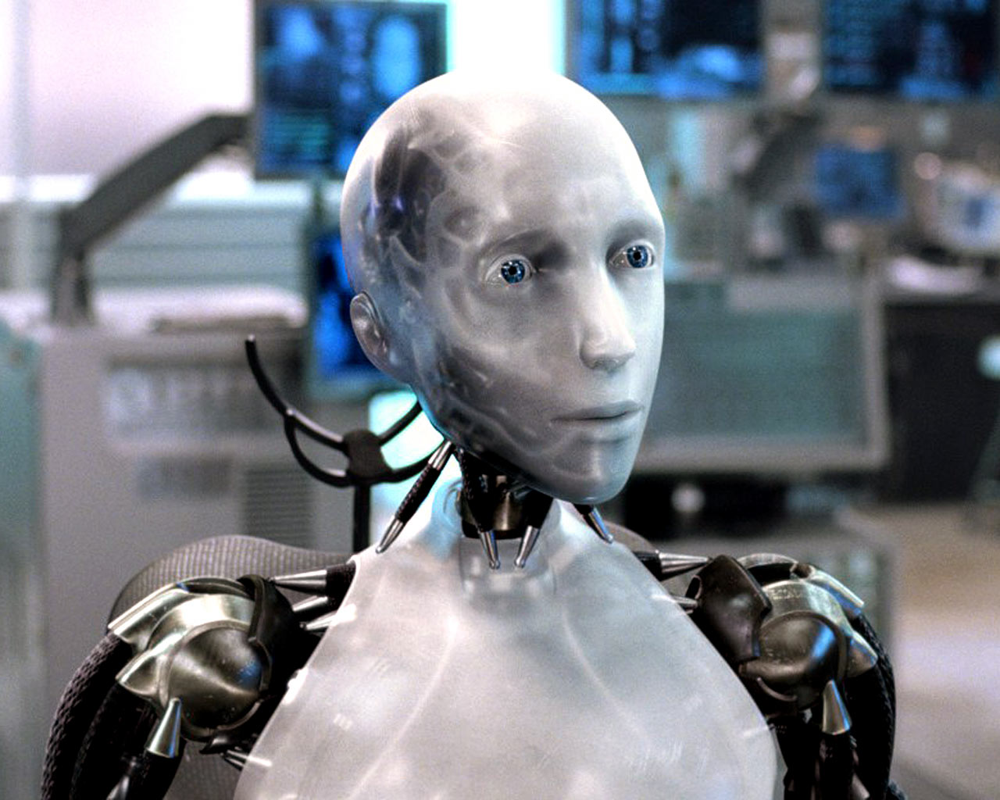

-CODY HOHMAN-
Born and raised in Pittsburgh, PA with my mother, father, and sister Lexi. I am 16 years old and have a passion for the game of golf and computer science. My dream is to become a professional golfer and play on the PGA Tour. I am one of the Captains of the Varsity RB golf team. I am really into cars and my favortite, the Mclaren P1 is my dream car. The future of technology will consist of autonomous vehicle and robots performing daily tasks to enhance our life. I want to be the one coding and programming technology of the future.
